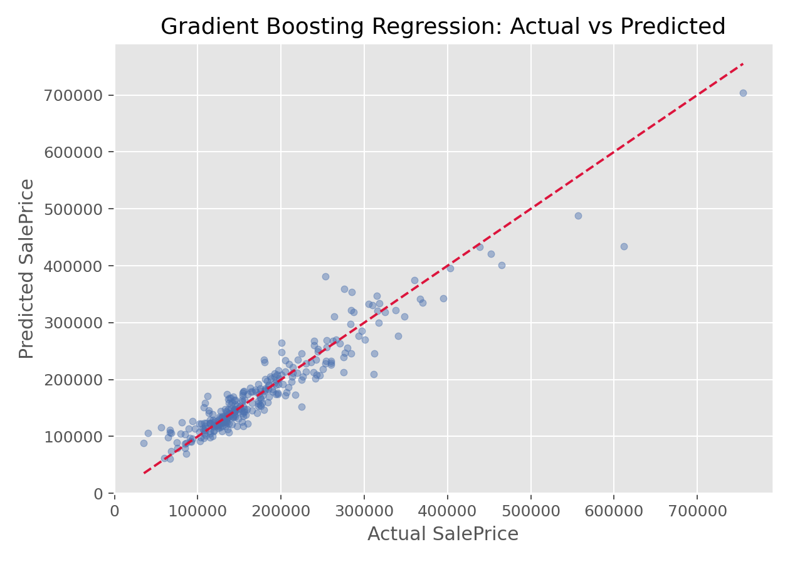

梯度提升回归
梯度提升回归（Gradient Boosting Regression）
方法概览
1.1 一句话本质
梯度提升回归用一连串浅回归树逐步拟合当前损失的负梯度，从而不断修正连续结局预测。
1.2 定义
梯度提升回归是 梯度提升决策树（Gradient Boosting Decision Tree, GBDT） 在连续结局上的具体形式。平方损失下，每棵新树拟合当前残差；使用绝对误差、Huber 或分位数损失时，它拟合相应损失给出的伪残差。
1.3 它主要解决什么问题
- 连续结局与特征关系明显非线性。
- 不同变量间存在阈值效应与交互。
- 线性回归偏差较大，而单棵回归树预测不够稳定。
1.4 直觉与类比
先用总体均值作为粗略预测，再让第一棵树修正大方向，第二棵树修正剩余偏差。学习率像修订幅度，避免每轮因局部误差而改得过猛。
核心思想与原理
2.1 损失决定学习目标
- 平方损失：重罚大误差，伪残差等于普通残差。
- 绝对误差：对离群值更稳健，目标更接近条件中位数。
- Huber 损失：小误差用平方惩罚，大误差近似线性惩罚。
- 分位数损失：估计给定条件分位数，可构造预测区间的上下界。
2.2 偏差与方差控制
浅树、小学习率和较多轮数常形成平滑的逐步逼近；树太深或步长太大，则容易快速贴合训练噪声。
2.3 它不是传统回归推断
模型给出预测函数而非一组可直接解释的斜率。变量效应、标准误和置信区间不是默认产物；若研究目标是参数估计，应考虑更合适的统计模型。
数学形式
3.1 平方损失
$$ L(y,F)=\frac12[y-F(x)]^2 $$
其负梯度为：
$$ r_{im}=y_i-F_{m-1}(x_i) $$
3.2 树与叶节点更新
用回归树把特征空间分为 $R_{1m},\ldots,R_{Jm}$。平方损失下，第 $j$ 个叶节点的最佳修正是叶内残差均值：
$$ \gamma_{jm}= \frac{1}{|R_{jm}|} \sum_{x_i\in R_{jm}}r_{im} $$
$$ F_m(x)=F_{m-1}(x)+ \nu\sum_{j=1}^{J}\gamma_{jm}I(x\in R_{jm}) $$
3.3 关键参数
loss：平方、绝对、Huber 或分位数等。learning_rate与n_estimators：更新幅度与轮数。max_depth、min_samples_leaf：单树复杂度和平滑程度。subsample：每轮抽样比例，低于 1 时形成随机梯度提升。
3.4 关键条件
| 条件 | 违反后果 | 检查方式 |
|---|---|---|
| 结局定义一致 | 模型学习测量或编码差异 | 核查结局分布与单位 |
| 损失符合目标 | 均值、稳健位置或分位数答非所问 | 预先定义 estimand |
| 外推范围有限 | 树模型在训练范围外常近似常数外推 | 比较特征取值范围 |
| 数据独立或已妥善分组 | 重复测量造成泄漏 | 按患者分组切分 |
手把手算例
4 名患者连续结局为 $y=(2,4,6,8)$，用平方损失和学习率 $\nu=0.5$。
Step 1：初始常数。
$$ F_0=\bar y=5 $$
残差为 $(-3,-1,1,3)$，初始 $\operatorname{MSE}=5$。
Step 2：第一棵树。 假设树把前两人与后两人分开。两个叶节点的残差均值分别为：
$$ \gamma_L=(-3-1)/2=-2,\qquad \gamma_R=(1+3)/2=2 $$
更新后：
$$ F_1=(5,5,5,5)+0.5(-2,-2,2,2)=(4,4,6,6) $$
新残差为 $(-2,0,0,2)$，$\operatorname{MSE}=2$。
Step 3：再修正。 若第二棵树把两个端点的残差近似为 $(-2,0,0,2)$：
$$ F_2=F_1+0.5(-2,0,0,2)=(3,4,6,7) $$
此时 $\operatorname{MSE}=0.5$。
结论： 浅树每轮只解释一部分剩余结构，小步累加形成最终非线性回归函数。
数据形式与输入输出
5.1 数据要求
- 因变量为连续型，可按研究目标变换尺度。
- 特征可为数值或编码后的类别变量。
- 经典实现通常需预先处理缺失。
- 重复测量必须按患者分组切分，避免同一患者进入训练与测试。
5.2 产出
输出连续预测、逐轮损失和特征重要性。预测不确定性通常需借助分位数模型、bootstrap、保形预测或其他专门方法获得，不能把单点预测误写成区间。
适用场景
- 费用、住院时长、实验室数值和连续风险评分预测。
- 非线性和交互强、预测性能优先的表格数据。
- 慎用于需可靠外推、样本很小或主要目标为变量效应估计的研究。
实现
from sklearn.ensemble import GradientBoostingRegressor
from sklearn.metrics import mean_absolute_error, root_mean_squared_error
model = GradientBoostingRegressor(
loss="huber",
n_estimators=800,
learning_rate=0.03,
max_depth=2,
min_samples_leaf=20,
subsample=0.8,
n_iter_no_change=30,
validation_fraction=0.2,
random_state=42,
)
model.fit(X_train, y_train)
pred = model.predict(X_test)
print("MAE:", mean_absolute_error(y_test, pred))
print("RMSE:", root_mean_squared_error(y_test, pred))
library(gbm)
fit <- gbm(
AnnualCost ~ Age + Charlson + HbA1c + eGFR + PriorCost,
data = train,
distribution = "tdist",
n.trees = 800,
interaction.depth = 2,
n.minobsinnode = 20,
shrinkage = 0.03,
bag.fraction = 0.8,
cv.folds = 5
)
best_n <- gbm.perf(fit, method = "cv", plot.it = FALSE)
pred <- predict(fit, newdata = test, n.trees = best_n)
这里 Python 使用 Huber 损失，R 的 gbm 示例使用 t-distribution loss 作为稳健回归方案；二者不是同一个损失函数。
结果如何解释
- MAE 表示平均绝对误差，单位与结局相同；RMSE 对大误差更敏感。
- $R^2$ 反映相对基准的解释程度，但不能替代误差的临床单位解释。
- 残差应按预测值、时间、中心和关键亚组检查。
- 变量重要性和解释图描述模型预测关系，不是调整后的因果效应。
诊断与稳健性
- 画训练/验证损失，检查最佳轮数与过拟合。
- 比较平方、Huber 和绝对误差损失。
- 检查真实值-预测值、残差-预测值图和极端误差病例。
- 以简单均值、线性回归和 随机森林回归（Random Forest Regression） 为基准。
- 做时间外、中心外和亚组验证；按临床可接受误差解释结果。
推荐可视化
- 真实值与预测值散点图，叠加 45 度参考线。
- 残差与预测值图。
- 训练/验证损失曲线。
- 特征重要性、部分依赖或 SHAP 图。
下图展示真实值与预测值的对照关系：

优势、局限与常见坑
优势： 连续结局预测能力强，损失灵活，能自动学习非线性与交互。
局限： 外推能力弱、调参较多、不直接提供经典推断与预测区间。
常见坑： 随机拆分重复测量；只报 $R^2$；未与简单基准比较；把特征重要性解释成效应大小。
与相近方法的区别
- 梯度提升决策树（Gradient Boosting Decision Tree, GBDT）：总框架与连续结局具体应用的关系。
- 决策树回归（Decision Tree Regression）：单树易解释但不稳定，提升回归逐轮叠加多树。
- 随机森林回归（Random Forest Regression）：并行平均主要降方差，梯度提升串行修正偏差。
- XGBoost（Extreme Gradient Boosting, XGBoost）：增加二阶近似、显式正则化和工程优化。
医学研究中的典型应用
- 年度医疗费用和住院时长预测。
- 肾功能、血糖、血压等连续指标预测。
- 术后恢复评分、生活质量评分与剂量需求预测。
术语表
| 术语 | 含义 |
|---|---|
| 平方损失 | 对大残差施加平方惩罚 |
| Huber 损失 | 兼顾平方损失效率与绝对误差稳健性 |
| 分位数损失 | 针对条件分位数的非对称绝对损失 |
| 叶节点值 | 新树在该区域给出的预测修正 |
| 外推 | 对训练特征范围之外的数据预测 |
相关方法
参考资料
- Friedman JH. Greedy function approximation: a gradient boosting machine. Ann Stat. 2001;29(5):1189-1232.
- Friedman JH. Stochastic gradient boosting. Comput Stat Data Anal. 2002;38(4):367-378.
- scikit-learn Developers.
GradientBoostingRegressorAPI Reference. https://scikit-learn.org/stable/modules/generated/sklearn.ensemble.GradientBoostingRegressor.html （访问日期：2026-07-09） - CRAN. Package
gbm. https://cran.r-project.org/package=gbm （访问日期：2026-07-09）